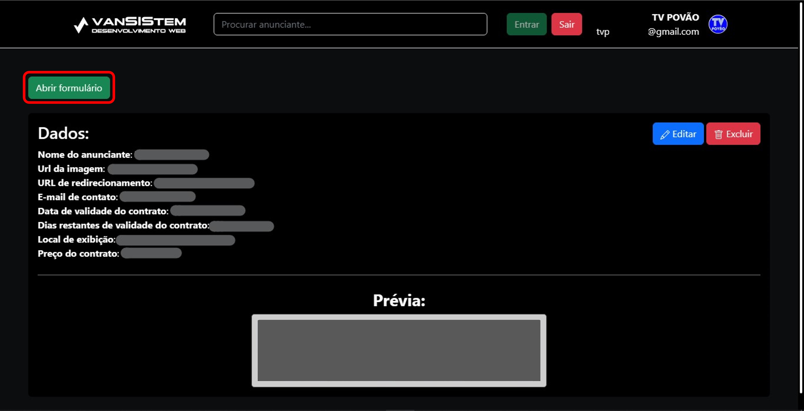

Entendendo o funcionamento do site:
1. Acesso bloqueado
2. Adicionando um novo anunciante
Para adicionar um novo anunciante clique no botão verde para abrir o formulário, depois preencha os dados, entenda cada um:
- Escolha o arquivo de mídia que será exibido para o usuário no site. Esse arquivo deve ser JPG, PNG, JPEG, WEBP ou GIF;
- Digite o nome que identificará o anunciante;
- Inform o e-mail de contato do anunciante. Ele será usado para notifica-lo de ações realizadas que tenham um grande impacto a ele, como, por exemplo a exclusão do seu anúncio;
- Digite para onde o usuário será redirecionado quando clicar no anúncio;
- Informe quando o contrato do anúncio vencerá e deixará de ser exibido;
- Escolha onde o anúncio será exibido, os valores são:
- Somente no cabeçalho: Aparecerá depois do cabeçalho da TV Povão;
- Somente no rodapé: Aparecerá antes do rodapé da TV Povão;
- Somente no conteúdo principal: Aparecerá entre as postagens, na conteúdo da matéria e na parte lateral direita da TV Povão;
- No rodapé e no conteúdo principal: Aparecerá antes do rodapé, entre as postagens, na conteúdo da matéria e na parte lateral direita da TV Povão;
- No cabeçalho e no conteúdo principal: Aparecerá depois do cabeçalho da TV Povão, entre as postagens, na conteúdo da matéria e na parte lateral direita da TV Povão;
- No rodapé e no cabeçalho: Aparecerá antes do rodapé e depois do cabeçalho da TV Povão;
- Em todos os lugares do site: Aparecerá depois do cabeçalho da TV Povão, entre as postagens, na conteúdo da matéria, na parte lateral direita do site e antes do rodapé;
- Fixo no topo ou no 'chão' do site: Aparecerá fixo no site, ou seja, mesmo que a página seja rolada ele continuará imóvel fixo no topo ou no 'chão' do site, os chamados anúncios ancora.
- Informe o valor do contrato.
3. Informações do anunciante
Todos os anunciantes são exibidos com seus respectivos dados, além disso você pode ver uma pré-visualização de como o anúncio sera exibido para os usuários. No canto superior direito de cada um há botões para para realizar ações: editar ou excluir um anunciante.